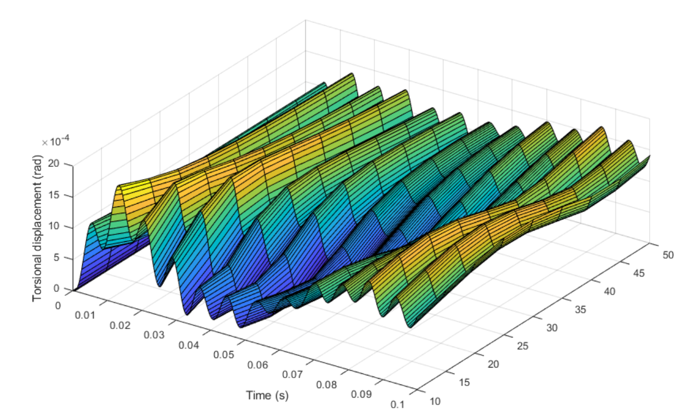
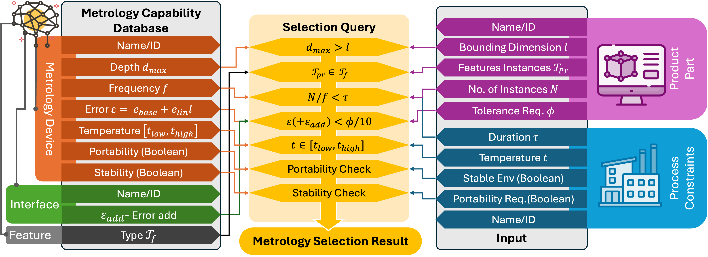
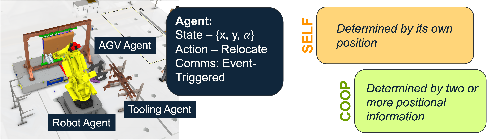
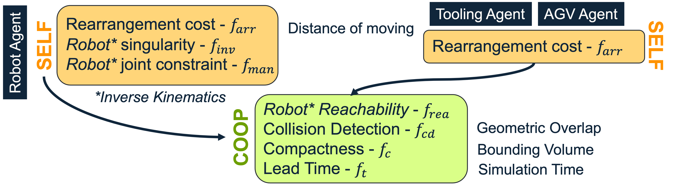
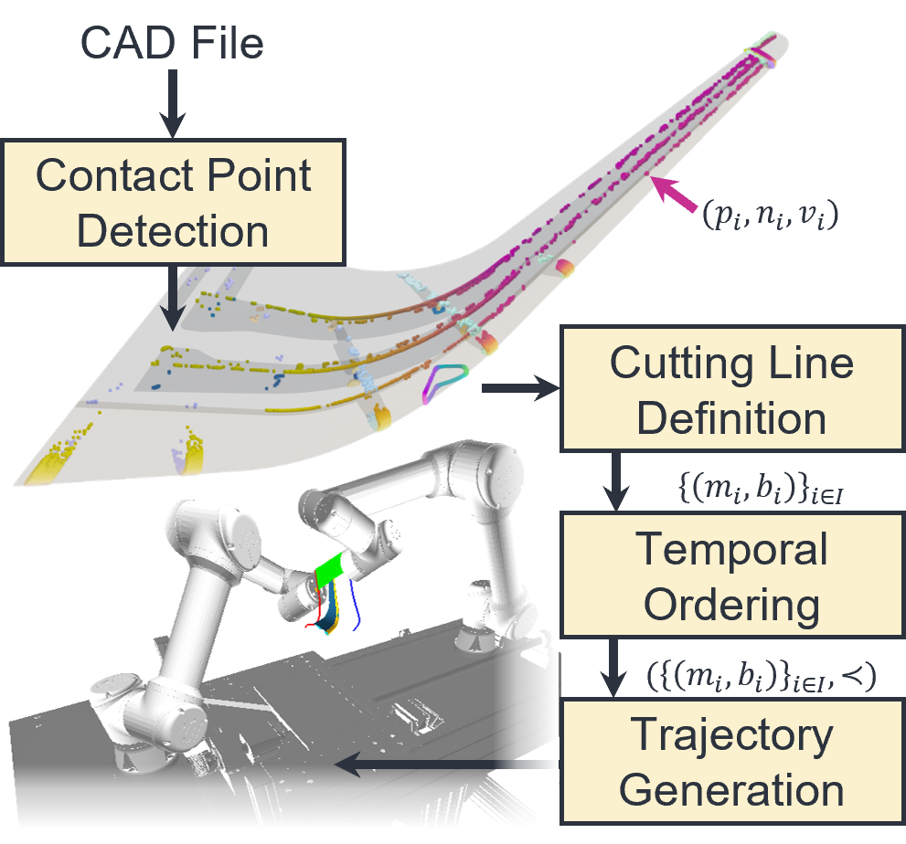
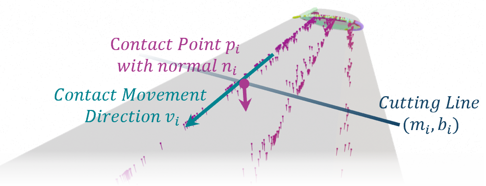

Assistant Professor in Mechanical Design & Solid Mechanics
Omnifactory | University of Nottingham | IEEE RAS Member | MentorTech A.C. Co-Founder
Reshaping aerospace through circular design and intelligent automation by connecting the dots from concept to end-of-life
My research follows the full lifecycle of a product — from the first design decision to what happens after its working life ends. Click any stage to explore the capabilities and case studies behind it.






Research that doesn't stay on paper. Here is a selection of outcomes that have reached industry — from cost savings and speed records to product launches and maiden flights.
Peer-reviewed journal papers, conference papers, and award-winning research spanning digital twins, reconfigurable manufacturing, and intelligent optimisation. For latest publicatiosn, check out my Google Scholar Page
My research has been shaped by close collaboration with leading aerospace and manufacturing companies, national research centres, and international academic institutions.
Whether you're an industry engineer looking to solve a specific manufacturing challenge, a technologist exploring AI-driven automation, or a student seeking research supervision — I'd be glad to hear from you. My research thrives at the intersection of academic rigour and real-world application.
I welcome conversations with engineers, researchers, technologists and students. Whether it's a research idea, an industrial challenge, or a collaboration opportunity — feel free to reach out.
I am based at the University of Nottingham's Advanced Manufacturing Building — home to the UK's leading facilities for intelligent manufacturing research Omnifactory .
For industry enquiries, research partnerships, or speaking invitations, email is the best way to reach me.